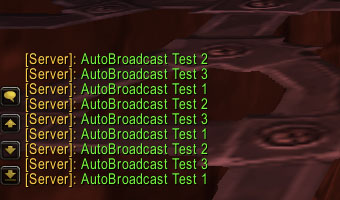

Description: a small patch to make autobroadcast in chat.
NOTE: check the config settings and enable the broadcaster.
How to add: safe all as "autobroadcast.patch" file add with git bash "patch -p1 > autobroadcast.patch" add the 2 sql files into your "reamld and world" database compile and have fun.